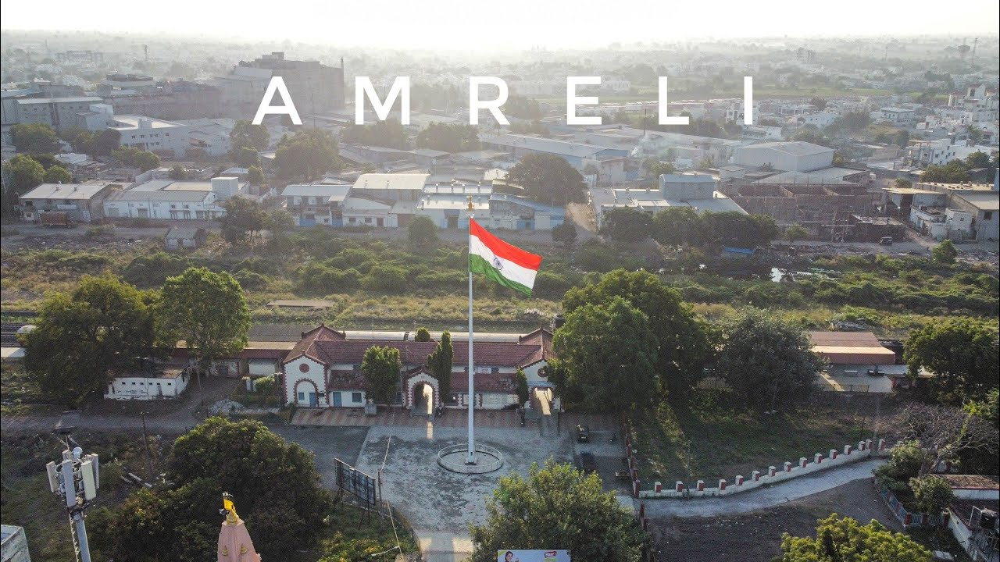

AMRELI - A BEAUTIFULL DREAM PLACE

It is believed that during 534 AD Amreli existed was formerly known as Anumanji, Amlik and then Amravati.
The
city is named in ancient Gujrati as Amarvalli. It is learnt from the inscription in the Nagnath temple that
ancient name of Amreli city was Amarpalli.
It was also called Girvanvalli. Amongst the remains of the ancient
town are the memorial stones or paliya and foundations discovered
in the fork of the Thebi and Vari rivers, and
two old temples, Kamnath and Trimbaknath, on the west and east of the river.
In the eighteenth century only the west and south of modern Amreli, still called Juni or Old Amreli, were
inhabited.
The old inner fort, called Juna Kot, was used as a jail, and the Juna Masjid near it, belong to the
old town. Modern Amreli dates from 1793,
when Vakhatsingh of Bhavnagar sacked the neighboring Kathi possession
of Chital and drove many of its people to Amreli and Jetpur.
Othar Places
- Kamnath Mahadev Mandir
- Nagnath Mandir
- Thebi Dem
- Gandhi Baag
- Amreli Tower
For More Information
Amreli Website
Thanks For Visit !